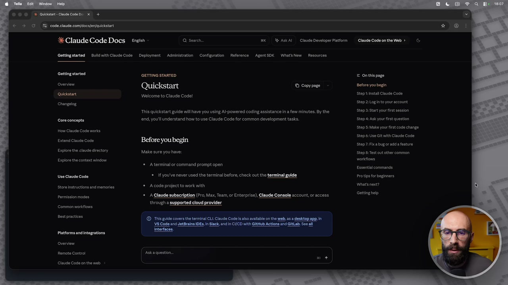
OCR: X Claude Code Docs engish @ Search 2K 33 ASKAI | Claude Developer Patform Gettingatarted | BuikdwithClaude Code | Deployment | Administration Configuration Reference | AgentSOK | WhatsNew | Resources Getting started GETTING STARTED = Onthis page Overvien Quickstart Before you begin Sio Welcome to Claude Code! Step Install Claude Code Changetog Step2iLoginto youraccount. This quickstart guide will have you using Al-powered coding assistance in a few minutes. By the Step Start your rst session cea endi you'll understand how to use Claude Code for common development tasks. Step Ask your ist question Step 5: Mal your first code chan How Claude Code works vini se tend Clude Code Before youbegin Step di Use Gitwfth Claude Code Step7.Fixa bugoradda feature Explore the claude directory Make sure you have: ‘tape: Test out other common Explore te context window: workflow A terminal or command prompt open Essential commands es Grande Cao * If you've never used the terminal before, check out the terminal Protipa for beginners Store Instructions and memories A code project to work with What net? Permission modes. A Claude subscription (Pro, Max, Team, or Enterprise), Claude Console account, or access Sergio through a supported cloud provider Common worktlows Best practices ‘© This guide covers the termina! CLI Claude Code s also avallable on the web, asa desktop app, in US Cod and etBraln DES, Sick adi C/CO with GRHub Action and Giab. oe all Piatorms andintogrations can) Grervion Remota Control ‘ala question Chace Cod n the web
E adesso invece vediamo come installare Cloud Code. L'installazione di Cloud Code e anche il suo utilizzo iniziale potrebbe sembrare un pochino complicato perché ci serve il terminale e il terminale è questa roba qua, questa schermatina nera con testo bianco, in stile Matrix, che spaventa sempre qualcuno e io so che molte persone non si sono avvicinate a Cloud Code a causa del terminale. Prima cosa, non vi spaventate perché in questo corso lo utilizzeremo pochissimo perché più avanti vi faccio vedere che in realtà possiamo anche scavalcare il terminale e usare altro che è un pochino più comodo, un pochino anche meno spaventoso dal punto di vista dell'interfaccia, un po' più facile. Seconda cosa importante da dire però, prendete confidenza con il terminale perché non è uno strumento terribile, è un luogo nel quale diamo dei comandi e possiamo fare delle cose. Quali cose? Installare delle app, creare dei file, modificare dei file, lanciare delle app, dei tool e così via. Un'app molto potente nel quale possiamo fare diverse cose.
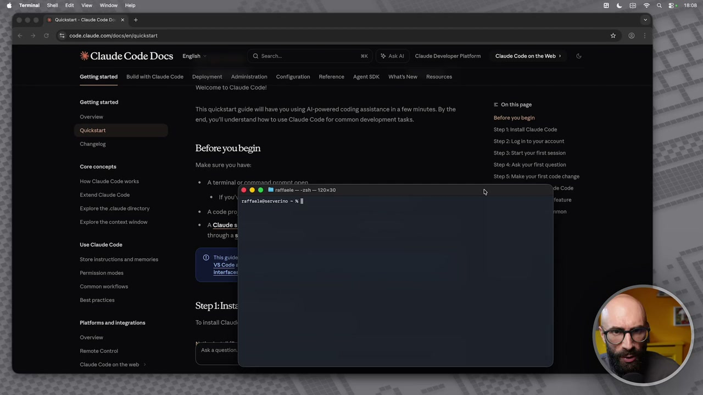
OCR: © © © (A Questi Claude code De x + € 3 e 3 code claude. comidocs/eniauiistart X Claude Code Docs engish Q Search XK 39 ASKAI |. Claude Developer Platform Gettingstarted | Bulk with Claude Code | Deployment Administration Configuration Reference AgentSDK | What&New Resources Welcome to Claude Code! Getting started This quickstart guide will ave you using Al-powered coding assistance in a few minutes. By the Sr ‘end you'Il understand how to use Claude Code for common development tasks. quin cas iui : fore you begin a Malo sure ou have: He Gina Coda war: * Aterminalorcommandoramotonen. © @ © Mirattacio—2sh— 12030 rattaetseserverino = x Extend Claude Code Explore the claude directory Explore te context window Use Claude Code Store instructions and memories Permission modes Common worktione est pracicee Li Stepl:Inst: Pittore and intagration Toinstai val overvien Remote Contro ‘Aska question Claude Cod on the web = Onthis page Before you begin Step install Claude Code Stop2:Loginto you account Steps: Start your firstsssion Stop Ask your rst question Step: Make your rst code change —x e Code fenture
E terza cosa importante, comunque un poco di praticità, con il terminale la dovete prendere perché il terminale è utilizzatissimo in ambito AI, soprattutto quando ci spostiamo verso questi usi un pochino più agentici, non dico nemmeno avanzati perché questi non sono usi avanzati. Allora, l'installazione come si fa? Dovete dare un comando fondamentalmente, andate nella documentazione ufficiale di Cloud Server, perché magari nel momento in cui sto registrando, nel momento in cui lo vedete voi è cambiato qualcosina, quindi questo comando che io copio e incollo in questo momento potrebbe essere leggermente diverso. Però, diciamo, c'è sia il comando per Mac sia il comando per Windows, attenzione perché in Windows sono due comandi in base al tipo di terminale che utilizzate. Questo è il comando per Mac oppure per Linux, quindi vado qua nel mio bel terminale, lo incollo e poi do invio, eccoci qua, do invio e parte l'installazione, ok? Questa è semplicemente la fase di installazione, non vi preoccupate perché anche se è una
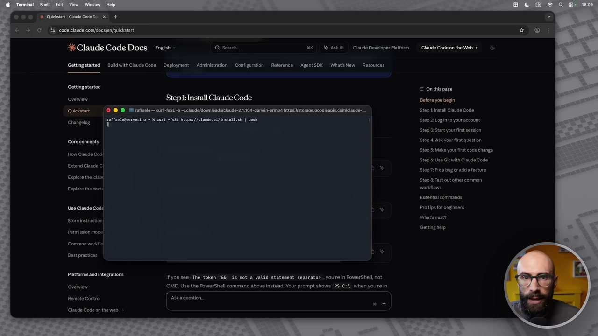
OCR: ®© © |A Queste: Claude Code a x + È > © #5 code claude. com[docs/en/auicktart Claude Code Docs engish Q Search xk 3) ASkAI | Claude Developer Platform Gettingstarted | Bulk with Claude Code | Deployment Administration | Configuration | Reference AgentSDK | WhatSNew | Resources Getting started ra Overview Step :Install Claude Code Before you begin quiciatai [© @ @ Mirattoolecuri-fsSL 0 -/claude/downicade/ciaude-2:1104-darwin-arm64 htps/storage.googiaapis comflaude-.. Step install laude Code Chang 'grfrnenirin = curi sit e/o iintzia| dei Step2iLoginto youraccount. Step: Stat your first session ssaa Step di Ask your first question Step st Make your first code change How Claude Cod Step ci Use Git with Claude Code Extend Claude Cl Step7.Fhxa bug rada feature Expiore the ciau ‘Step e: Test aut other common Explore the cont workfione Essential commands Use Claude Code Protips for beginners Store ietruction What next Gettinghelp Permission mode Common worklis Best practices Prectema animazione: Iyousee The token 'Gk' is not a valid statonent separator , youre in PowerShell,not Overvien ‘CIMD. Use the PowerShell command above instead. Your prompt shows. PS! C:\| when youte in Remote Contro ska question Cla Code n the web
cosa che non avete mai fatto, è di solito installate le cose facendo doppio clic o trascinandolo in una cartella, questo comando non fa qualcosa di molto simile, no, va semplicemente a prendere sul sito di Cloud, non vado nel tecnico, ma va a prendere sul sito di Cloud uno script di installazione e vi fa l'installazione in locale, tutto qua, ok? Veramente tutto qua, non vi preoccupate anche se in questo momento questa cosa non la capite, non è fondamentale, l'installazione è molto facile. Io questo link ve lo lascio, così voi potete partire da questo link e poi eseguire il comando, diciamo, aggiornato. Nel frattempo, mentre l'installazione va avanti, perché qua ci mette ancora qualche secondo, mentre l'installazione va avanti c'è una cosa importante da dirvi. Per utilizzare Cloud Code dovete ovviamente avere un abbonamento a Cloud. Prima si poteva avere solo quegli abbonamenti costosi, quelli da 100, 200, quello aziendale e così via. Oggi si può avere anche con l'abbonamento quello base, ok?
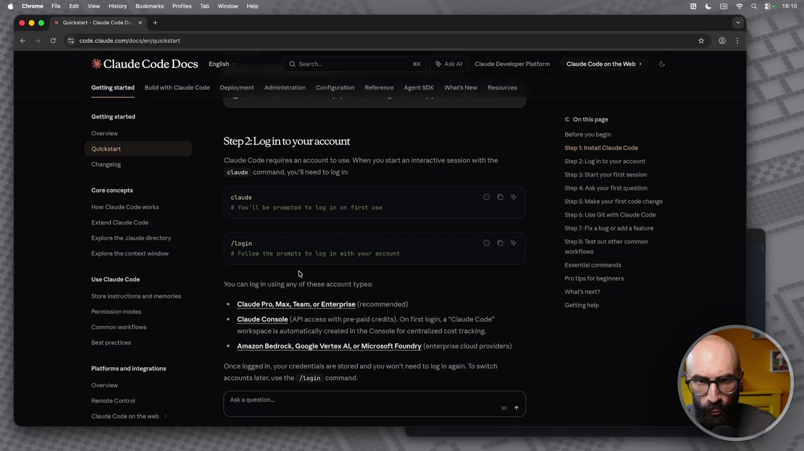
OCR: Claude Code Docs ensish Q Search xk 5 ASkAI | Claude Developer Platform Gettingstarted | Bulk th Claude Code | Deployment Administration | Configuration | Reference AgentSDK | What&New._ Resources Getting startodi = Onthis page Overviene ‘Step2logn Before you begin tep 2: Login to youraccount Quickstant Step Install Claude Code Claude Code requires an account to use. When you start n interactive session with the StepziLoginto your account laude command, yov'l need to log in: Step 3: Start your first session Changelog Core concepts z Step 4: ask your frst question Step st Make your first code change How Claude Code works # You'll be prompted to log in on first use Step ci Use Git with Claude Code Extend Claude Code Step7.Fhxa bug or addia feature Egeo nari ‘Posi Stepe: Test out other common Explore the context window # Follow the pronpts to log in with your. account workflons Essential commands 2 Vee Gana Cose; You can login using any of these account types: Protips for beglaners bat next? * Claude Pro, Max, Team, or Enterprise (recommended) Gettinghelp +. Claude Console (API access with pre-paîd credit). On first login, a "Claude Code” Workspace Is automatically created in the Console for centralized cost tracking. Amazon Bedrock, Google Vertex AI, or Microsoft Foundry (enterprise cloud providers) Store Instructions and memories Permission modes Common workflows Best practices Platform and integratione. Once logged in, your credentials are stored and you won't need to log n again. To switch accounts later, use the /login command. Overvien Remote Control ‘Aska question Chad Cad n the web
Che credo costi una ventina, non ricordo bene, quindi partite anche con quello e poi una volta che lo utilizzerete, lo amerete, capirete perché vale la pena fare l'abbonamento. Volendo, vi aggiungo questa cosa, anche se non avete l'abbonamento potete pagare semplicemente le API, praticamente pagate, diciamo, l'utilizzo, ok, a consumo, mettiamola così, una sorta di pagamento a consumo. Io ve lo sconsiglio soprattutto nella fase iniziale perché non avete magari ancora praticità di quanto spesso state usando lo strumento e quindi di quanto potete consumare e magari va arrivando un pagamento troppo grande e non ne vale la pena. Quindi vi fate il vostro abbonamento da 20 e qualcosa e state tranquilli, fate, diciamo, fate quello. Ecco qua, l'installazione l'abbiamo fatta, come vedete, diciamo, dura una manciata di secondi. Il terminale qua ci dice una cosa, ci dice, guarda, io te l'ho installato dentro questa cartellina, solo che questa cartellina non è nel tuo path, anche qua non vado nel dettaglio.
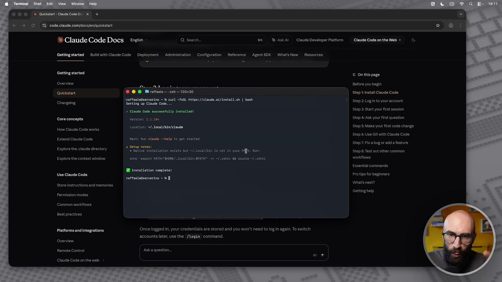
OCR: © © © |A Queistt Cd code e x + © > © *E code claude. comdocs/eniauicktart X Claude Code Docs engish Q Search xk 3) ASkAI | Claude Developer Platform Gettingatarted | Buikdwith Claude Code | Deployment | Administration | Configuration | Reference | AgentSOK | WhatsNew | Resources Getting started CARRA Overvien da Before ou begin quekstan © © @ Marattocio 25h 120130 Step install Claude Code Vrattaele@serverino x curi SSL https://clade.ai/install.ih | bash tep 2: Log into your account changelog Cani uu Step2iLoginto your account “ Claude Code successtuliy inetalledi Gore concepts vernioni 21,196 Step di Ask your first question Step Start your first session oestione «2. Step si Make your first code chan cm a Coltnie Location: «/Aoca1/bin/claudo 5: Make ye ve Steps: Use Gi lt Claude Code, Extend Claude Code Next: Run claude help to per started Step7.Fixa bugor ada feature Explore the claude directory SS = Nativo instaation edita but -/ 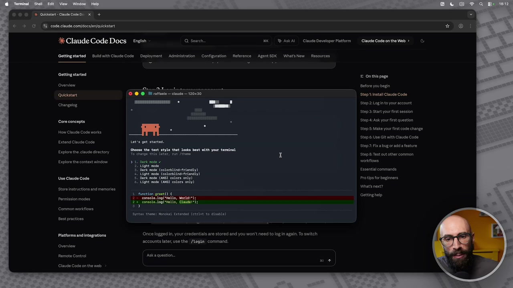 OCR: ® OO A Questi Claude code De x + È > @ #5 code claude. com[docs/eniauicktart Claude Code Docs english Q Search XK %) AskAi | Claude Developer Platform Gettingstarted | Bulk with Claude Code _ Deployment. Administration | Configuration ‘Agent SDK. What!sNew Resources Getting started pu ina pese Qvervion Before you begin qucistani © O © MI ratsio— ciaude = 120190 Step tInstali Claude Code changelog StepziLoginto your account Step i Start your first session core concepts Step 4 Ask your first question Stop Sk Make your first code change How Claude Code works Step 6: Use Gt wlth Claude Code, Extend Claude Code Lotia get atarted. Choose the text style that 1ooks best with your terminal To change this acer, run /these tape Test aut other common Stop7.Fhxa bugor ada feature Explore the claude directory Explore the context window workfions, Lig nodo. . Dark nodo colorblinfrienaiy) Essential commands Light node (colorblind- friendly) Use Claude Code Dark nodo (ASI colors only) Pro tips for beginners Light mode (ANSI colors only) Wihats next? tunetion greet0) Gettinghelp son mode TameleIgi setto, rit ne i ame dla, Cini Store Instructions and memories Common worktlows Best practices Frectrntaancimegragione Once logged in, your credentials are stored and you won't need to log in again. To switch accounts later, use the. /login: command. Overvien Remote Contro! Aska questo. Claude Cod n the web 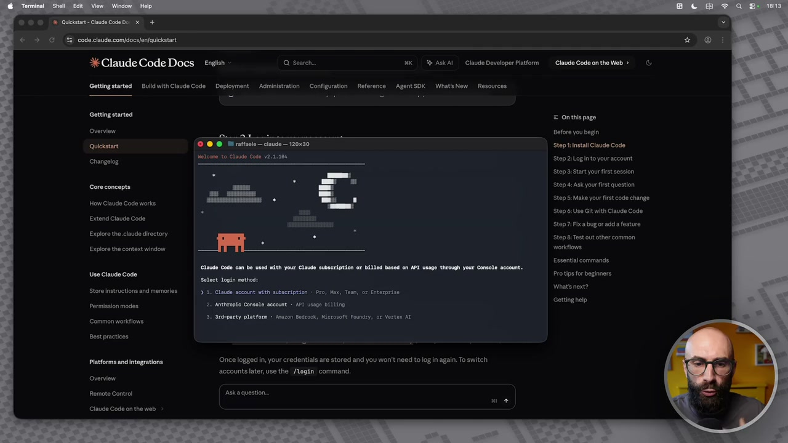 OCR: © © © |A Queste Claude Code De x + © > © * codeclaude.com/docs/en/quickstart X Claude Code Docs engish Q Search XK 3} ASkAI | Claude Developer Platform Gettingatarted | Buikdwith Claude Code | Deployment | Administration | Configuration | Reference | AgentSOK | WhatsNew Resources Getting started ra Overvien PTT Before you begin quicistai © @ © MI rattvie— ciavde 120130 Step tIntali Claude Code ein o lado cosi 118 top 2:Lagintoyouracccun Changelog satana i Step 2: Start your rst session Core concepts Step Ask your ist question Stop 5: Male your first code chan How Claude Code works ine ia Step 6: Use Glt with Claude Code Extend Claude Code Stop7: Fica bugoradd a feature Explore the claude directory ‘Step ei Test aut other common Explore the context window workflow, Essential commands Claude Code can be used with your Claude subscription or bilIcd based on API usage through your Console account. Use Claude Code Protips for begianere Select login methodì Wine? Store instructions and memor > 1, Claude account with subscription ; Pro, Max, Tesn, cr Enterprise setting hei Permission modes 2. Anthropie Console account API Uaspe bitLinO Soli Common workilons 3, Are party platform > soszon Bedrock, Microsoft Foundry, or Vortex AT Best practices Platforms and integratione. Once logged in, your credentials are stored and you won't need to login again. To switch accounts later, use the /login command. Overvien Remote Contro ska question. Claude Code n the web 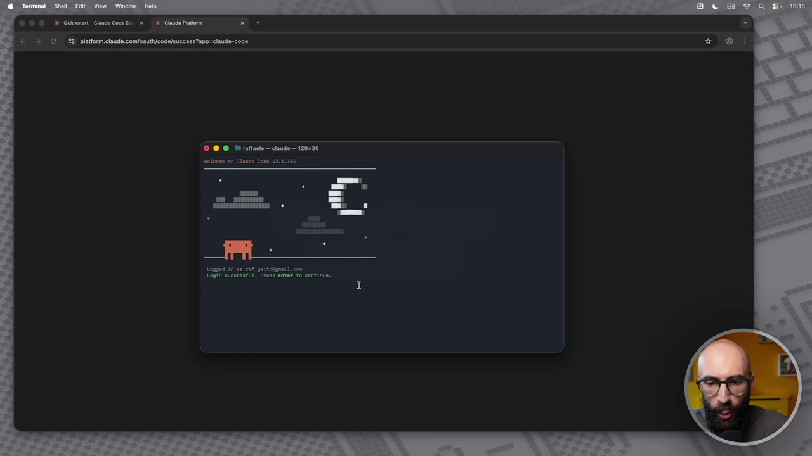 OCR: ®© Od Quciste- Claude Code De. x.) Cine Pittor + È > © piatformclaude.comfoauth/codelsuccess?app=claude-code O @ © Ri rattuole claude — 120x230 leon to Ciad Coda v21.104 togped in Login successful: Press Enter to continue. 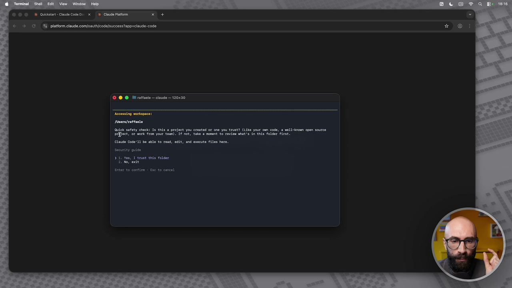 OCR: © © di Queist- Cade Code De x Ciad ito DE È > @ *: piatformclaude comfoauth/codelsuccess?app=claude-code © @ @ Ri rattoeio— claude — 120030 Rccessing vorkapace: Posersfrattaete Quick safety check: Is this a project you created or one you trust? (Lika your om code, a well-inom open source BEBfict, or work fron your team). IF not, take a monent to review at's in this folder Tirst. Clause code: Il be able t0 resd, edit, and escuto files here, Security guida 3 3e Yes, 1 enver this folder 2: N05 este Enter to confirm + Eac to cancel 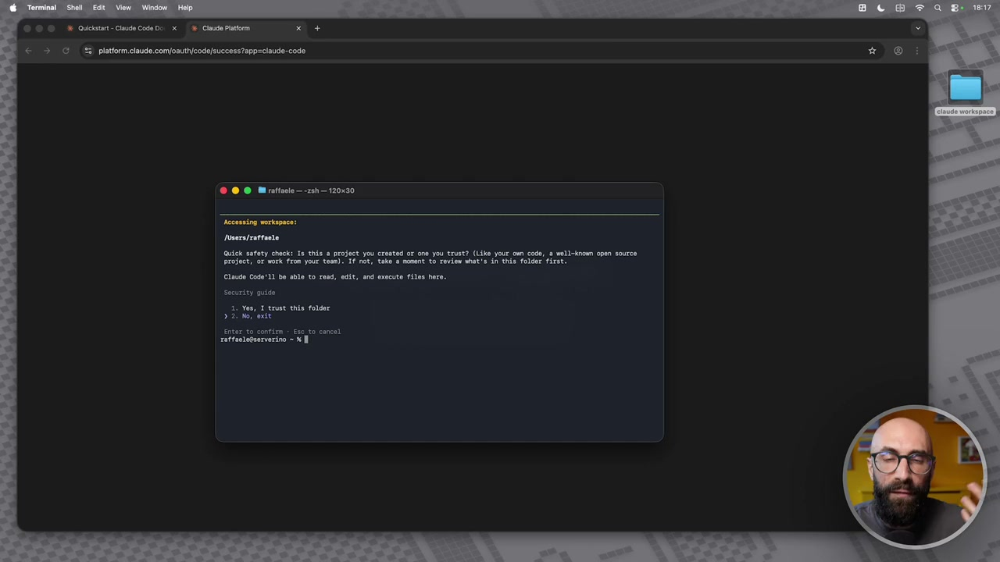 OCR: © ©» Quei Cau Code De x Cine ito si + È > @ *: piatformclaude comfoautt/codelsuccess?app=claude-code © @ © Mirattario sh 120x230 Tosers/rattaeta Quick safety check: Is this a project you created or one you trust? (Lika your om code, a well-inom open source Broject, OP work fron your team). IF not, tale a monent to review mut's in this folder first. Clause Code'I1 be able t0 resd, edit, and execute files here. Security guide 2, Vos, 1 trust this folder Zi dor ode Enter to confirm + Esc to cancel ratfaenogserverino = % Il 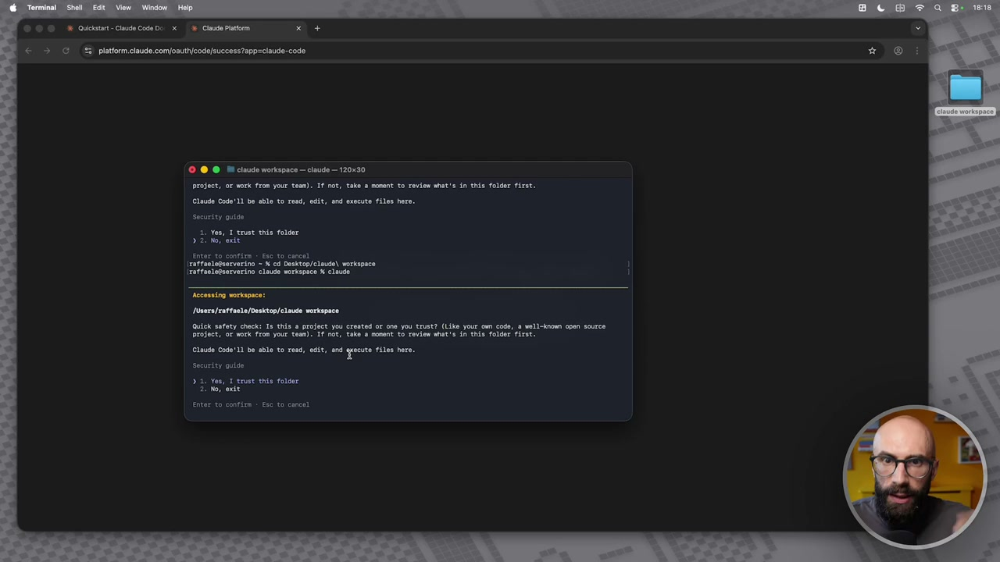 OCR: © @ @ Ra cisuda workspace — ciaude — 10x30 Project, or work fron your tese). IT not, take a monent to review what's in this folder first. Clause Code! 1 be able to read, edit, and esecute files hero. Security guido 1. Yes, 1 trust this folder 3 Zi N07 este Enter to contitm + Exe to cancel (raffaelWGserverino = % cd Desktop/elaude\ workspace IFartaelegserverino Clause workspaco % claude Accensing voriapace: Poners/rattaele/Dosktop/elaud vorkapace Quick sefery check: 10 this a project you erentad or ona you trust? (Like your cm code, a Broject, or work fran your team). IT not, ©oke a monone to reviom mat's in ts folder fi lau Css" Be ble to es, eo, nd que file tere. Security guide da: yes, 1 trust tris folder BESS mali-inoen open source 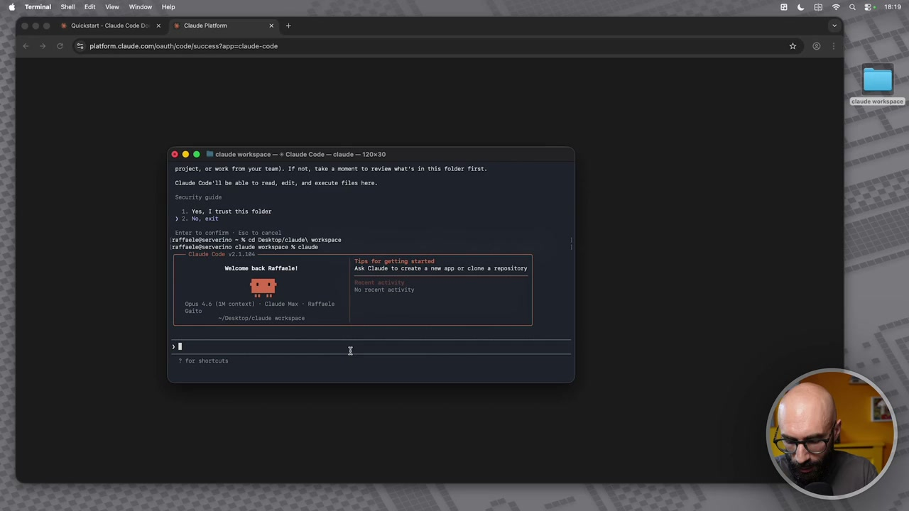 OCR: © @ @ MM cisude worispace — + Claude Code — claude — 120x30 Project, Gr work fron your team). IF not, take a monent to review vhat's in this folder rirst. ciato Code! 1 be able to resd, esiti and evecute files hero. Security quise 3. Vos, 1 trust tha folder 3 2 N67 et Enter to confirm + Exe to cancel (raffaelegserverino = % cd Desktop/elaude\ workspace IFaftaelegserserino Claude workspaco % cleuse "itaca Goa vara ae Tipo dor pecting start Welcome back Raffaele! AGk Claude to creste. new ap or clone a repository mm =. n Salto fbesktop/elsude vorkspace 7107 arene 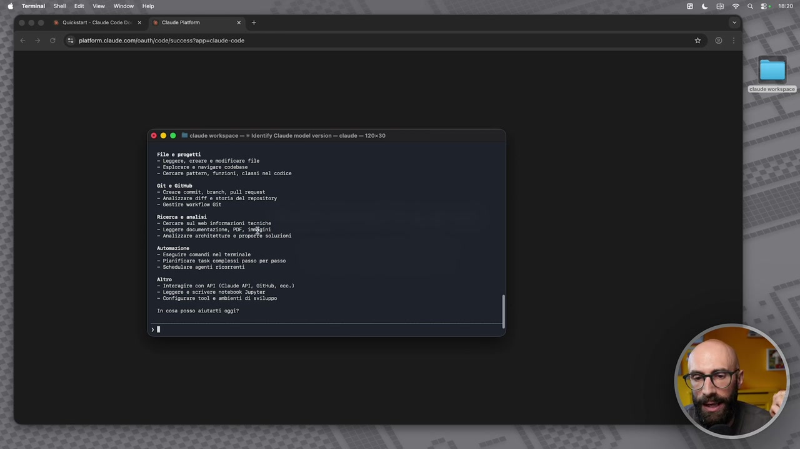 OCR: ®© ©» Queisin- Cud code De x Cine ito + È > @ © piatformclaude comfoautt/codelsuccess?app=claude-code © @ @ i cisuda norkspace — x Identity Claude model version — claude — 120x30 "seguire conandi nel terminale 7 Planteicare task conolessi passo per passo " Schedulare agenti ricorrenti nitro teragiro con K0T (Clase 401, gie, ecc.) 7 Leggero e scrive notebook Supytor © Configurare tool e sabienei ai sviluppo 1n cosa posso alutarti ogpi?In pratica ci dice, guarda, devi dare un comando aggiuntivo, altrimenti non puoi usare Cloud. Se io qua in questo momento, per esempio, do il comando Cloud, vedete, mi dice non lo trovo, non c'è il comando Cloud. In realtà Cloud è installato, solo che lui non sa, il terminale non sa in che cartella l'abbiamo installato, ok? Sto semplificando tanto per farvi capire. Quindi se siete più esperti questa parte qua è molto semplificata. Quindi cosa facciamo? Ci copiamo quest'altro comando, lo copio e lo incollo qua nel terminale e do invio, ok? In questo momento dovrebbe essere disponibile il comando Cloud e lo proviamo subito. Scrivo di nuovo Cloud, invio e adesso invece Cloud sta partendo, vedete? Ecco qua. E' partito Cloud e questo è il primo avvio dello strumento che abbiamo fatto. Quindi noi adesso, per utilizzare Cloud, passiamo dal terminale. Non vi preoccupate perché tra un attimino proprio vi faccio vedere che in realtà non passeremo dal terminale, noi lo useremo in modo molto più semplice, però per far vedere che l'abbiamo installato e che funziona, ok?
Schermata 5 [00:05:00] periodic
Quindi qua ci dice, allora la prima cosa che devi fare è scegli lo stile, come lo vuoi, dark mode, light mode, vedete? Quindi lo vuoi in stile scuro, in stile chiaro, puoi scegliere le varie modalità. Io uso tutto in stile dark, quindi metto dark, ma voi qua ovviamente ve lo personalizzate come volete. Ovviamente nel momento in cui voi vedete questo corso potrebbe essere cambiato, perché magari siete alla versione successiva di Cloud, quindi magari vi fa una domanda diversa, questo per capirci è la fase di configurazione iniziale, ok? Veramente tutto qua. E qua ci sta dicendo come vuoi accedere a Cloud, hai tre metodi, sono quelli che vi ho detto prima, con il tuo abbonamento, utilizzando le API, quindi dal consumo, oppure la terza con piattaforme di terze parti. Voi sicuramente non utilizzerete la terza, perché è quella molto più avanzata, complessa e probabilmente se state guardando questo corso non fate un utilizzo così avanzato. Quello che molti di voi faranno è la prima, quindi con il mio account, quindi voglio loggarmi
Schermata 6 [00:06:00] periodic
dentro Cloud Code con il mio account. Cosa faccio? Si apre la schermata, diciamo, di Cloud, che adesso mi fa fare il login, fondamentalmente Cloud dal terminale mi porta sul sito e dice ok adesso fammi vedere quindi che sei veramente tu. Fai login e quando hai fatto login io ti faccio usare Cloud dentro il terminale, quindi adesso qua diciamo farò una piccola pausa, perché metti i miei dati di accesso e poi riprendo. Ho fatto il login nel mio account, adesso Cloud Web, una volta che mi sono loggato mi dice guarda Cloud Code vuole fare questa connessione, quindi vuole collegarsi al tuo account, diciamo di Cloud. Autorizza questa cosa, voi fate autorizza e dopo avete finito. Da questo momento in poi, diciamo, la chat di Cloud, quindi per capirci quello da cui accedete al sito web è, diciamo, lo stesso account è collegato a quello del terminale. Quindi vedete che in questo momento dice sei loggato come Raffaele Gaito, quindi adesso diciamo sono dentro.
Schermata 7 [00:07:00] periodic
Se faccio invio, in questo momento sto utilizzando Cloud Code, vedete questo è il terminale per capirci, quindi non vi confondete con il browser che c'è dietro. Mi dice note di sicurezza, uno, ti ricordo che Cloud può fare degli errori, questo ovviamente vale sempre, gli errori li fa Gpt, li fa Copilot, li fa Grok, li fa Gemina, li fanno tutti quanti. E poi dice attenzione, visto che ci possono essere dei rischi di prompt injection, fai attenzione al codice che utilizzi. Ok, questa è una cosa che vi ripeterò spesso nel corso di questo corso, dobbiamo sempre fare molta, molta attenzione. Anche qua diamo invio e qua mi dice che tipo di impostazione vuoi utilizzare. Quindi, diciamo, se voi sapete quali sono le impostazioni che volete per andare nel dettaglio e ve lo potete fare, altrimenti dite guarda, usami le impostazioni default e voglio iniziare a utilizzare direttamente Cloud. E qua mi dice la cartella nella quale vuole lavorare. Dice allora, io in questo momento mi trovo nella cartella users slash Raffaele.
Schermata 8 [00:08:00] periodic
Perché? Perché ho aperto il terminale e ho dato subito il comando. Mi dice, guarda che tu, se mi dai accesso a questa cartella, io in questa cartella posso fare tutto. Posso scrivere file, posso cancellare file, posso rinominarle e così via. Ti fidi di questa cosa? Vuoi procedere? Qua la risposta è no, perché dobbiamo creare una cartella apposta per Cloud. Questa è una cosa importantissima che faremo adesso. Quindi qua gli diciamo no, exit e usciamo. Perché sto facendo questo passaggio? Perché avrei potuto farlo prima, ma voglio farvi vedere che lui vi chiede l'autorizzazione. Voi quando autorizzate Cloud a lavorare in una cartella, dentro quella cartella può fare tutto. Quindi occhio a cosa c'è dentro quella cartella. Ok? E un po' più avanti magari vedo pure dei suggerimenti per utilizzarla bene. Quindi cosa facciamo? Sul desktop qua mi faccio una cartella, la chiamo Cloud Workspace. Ok? Facciamo che tutto quello che faremo da questo momento in poi è fatto dentro la cartella
Schermata 9 [00:09:00] periodic
Cloud Workspace. Quindi diciamo per il terminale, io in questo momento diciamo nella mia bella schermatina del terminale, devo entrare dentro Cloud Workspace e poi posso lanciare Cloud, perché so che sto utilizzando Cloud dentro quella cartella. Di nuovo sembra complicatissimo, ma non vi preoccupate perché non lo è. Come posso fare ad entrare dentro quella cartella? Se quella cartella si trova sul desktop, quindi diciamo potrei fare così, potrei fare cd, qua dove si trova desktop e poi gli dico Cloud, poi gli do l'autorizzazione Cloud Workspace. Adesso lui in questo momento è entrato nella cartella Cloud Workspace. Ok? Qua dentro adesso se lancio il comando Cloud, Cloud sta lavorando nella cartella Cloud Workspace. Vedete? Adesso sei nella cartella Users, Raffaele, Desktop, Cloud Workspace. Ti fidi a lavorare dentro questa cartella?
Schermata 10 [00:10:00] periodic
Adesso gli posso dire yes. Non vi preoccupate perché questa cosa la fate solo la prima volta. Ok? E poi vi faccio vedere tra un attimo che tra l'altro noi non passeremo nemmeno dal terminale, ma passeremo da un'altra app, quindi sarà ancora più facile. Quindi mi dice sì, adesso io mi fido di questa cartella. Do invio, adesso sono dentro Cloud Code. Ora sono veramente entrato. Vedete questa schermata qua? Sono dentro Cloud Code. Mi dice che sto utilizzando Opus 4.6 Con una finestra di un minio di contesto, che abbonamento ho, ho l'abbonamento Max, mi dice chi sono, Raffaele Gaito e anche la cartella dove sto lavorando, Desktop, Cloud Workspace. Adesso questo terminale che prima sembrava difficilissimo, complicatissimo, una cosa mai vista prima, sapete che cos'è? È una semplice chat. Da questo momento in poi, questa è come la chat. È come la chat di quando siamo abituati ad utilizzare ChargPT Gemini oppure quella di Cloud Chat, solo che ha molte cose in più, molte funzionalità in più, perché diciamo appunto stiamo utilizzando Cloud Code. Per esempio, se io qua dentro gli dico che modello di Cloud sei, invio, e questo è come
Schermata 11 [00:11:00] periodic
se io avessi aperto Cloud e gli avessi scritto che modello di Cloud sei. Oppure no, quando vado dentro ChargPT e gli dico che tipo di ChargPT sei, mi dice sono Cloud Opus 4.6 Con test Dominio di Token, il mio ID esatto è Cloud Opus 4.6. Cosa puoi fare per me? Questi sono degli esempi molto stupidi, giusto per farvi vedere che adesso questa è proprio la chat di Cloud, solo molto più potente, perché siamo dentro Cloud Code, quindi un ambiente diverso, questo passaggio è fondamentale. E lui qua mi dice, guarda posso fare una serie di cose, sono specializzato in ingegneria del software. Vero, perché nasce come uno strumento per il software, ma noi in realtà lo useremo per tutto il resto tranne che per il software. Infatti gli esempi che ci fa codice non ci interessa, ma questo sì. Lui dice posso leggere, creare e modificare file, esplorare e navigare codice, cercare classi, posso fare analisi sul web, leggere immagini, pdf, proporre soluzioni, posso fare
Schermata 12 [00:12:00] periodic
automazioni, integrare con API e così via. In cosa posso aiutarti oggi? Vedete qua abbiamo una serie di cose che possiamo fare. Quando vogliamo uscire facciamo exit, semplicemente. Siamo usciti da Cloud, siamo adesso di nuovo nel nostro terminale, ok? Con questo abbiamo concluso l'installazione di Cloud Code. Si fa una sola volta, sembra complicatissimo, in realtà è facile, vi ho guidato passo passo. Adesso andiamo a vedere il passo successivo qual è.